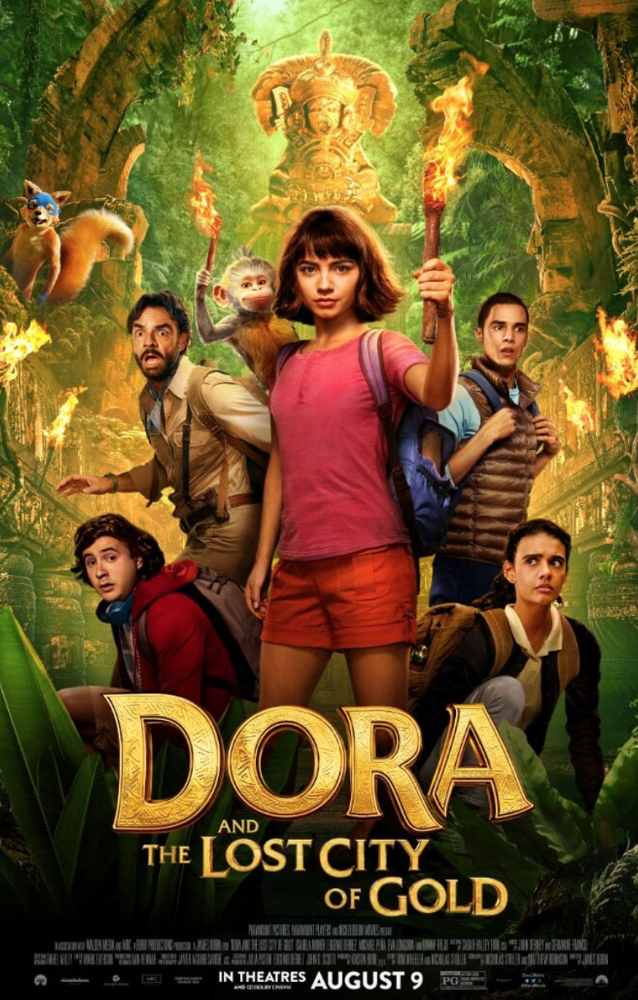

Internship: Paramount Pictures
Summer 2019 Domestic Interactive Marketing Intern in Los Angeles California.
Dora Talent Social Overview
The Dora and The Lost City of Gold marketing campaign was a major task of my internship. I was tasked with daily social tracking of all cast members, as well as sentiment tracking around fan social media buzz. Check out my talent social overview spreadsheet here! . 
It's a Wonderful Sponge Preparation
I was tasked with creating a cohesive deck of character descriptions for an upcoming SpongeBob Squarepants live-action animation. My deck was circulated and presented to members of cross-company teams who were unfamiliar with the television show. Check out my SpongeBob character deck here!
I was also responsible for analyzing and “translating” popular SpongeBob memes in order to produce similar copy for marketing efforts for the upcoming release.
Summer Intern Class of 2019
I had the amazing oppotunity to get to know my fellow 70-or-so interns throughout the summer. The friendships I made at Paramount Pictures really enriched my experience and understanding of different perspectives regarding the entertainment industry.
It was truly surreal to spend every day of my summer on the beautiful, historic, iconic Paramount Pictures lot. Walking past the fountain everyday to go to lunch near the “New York City” set is something I will never forget and always cherish.